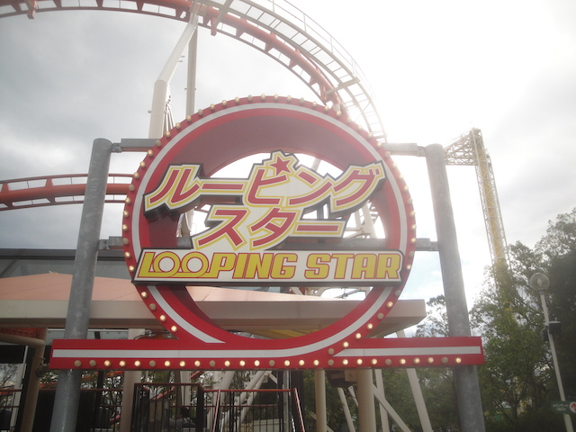
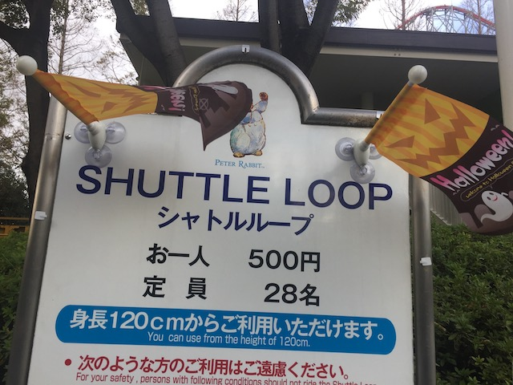
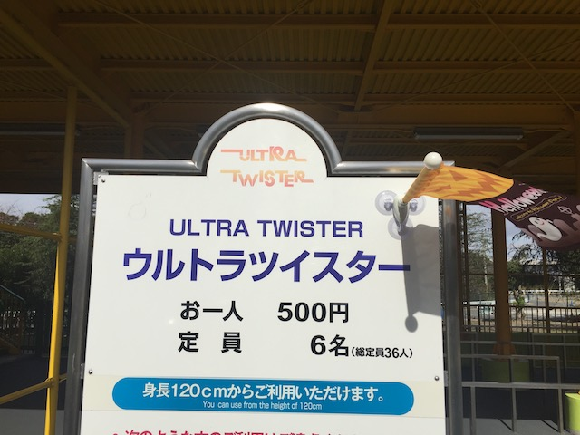
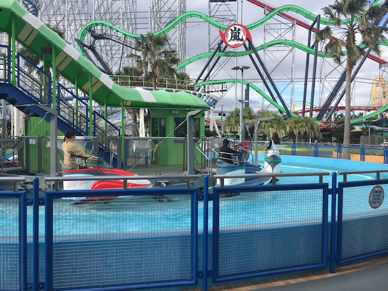
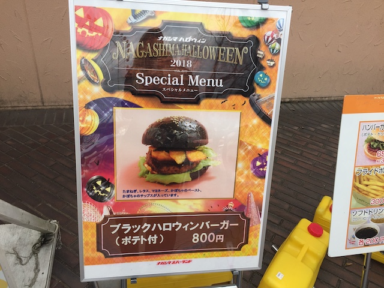
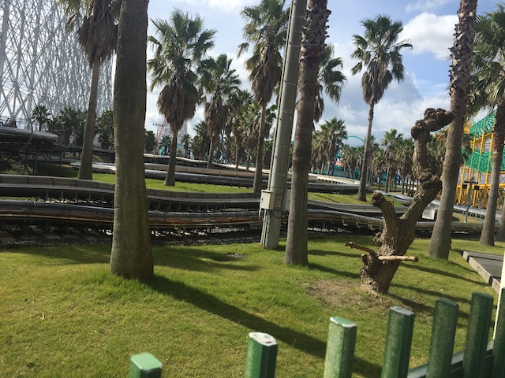

| |
Nagashima Spaland Review

Nagashima Spaland is a park that when you glance at it, this park makes a coaster enthusiast drool. And....yeah. This park is REALLY freaking good. Mainly, the one thing that this park is well known for is....the parks roller coaster collection. I mean, this park has frequently been called the Cedar Point of Japan. It's the one park in Japan that really seems to have....a large coaster collection that could easily pass as the coaster collection of a large Six Flags park in the United States. And not only does this have a large coaster collection, but it has a handful of coasters that enthusiasts go gaga over. For instance, Steel Dragon 2000 is one of the few giga coasters in the world, and certainly a unique ride. And while it was still under construction when I visited the park, Hakugei has gotten rave reviews and constant praise from everyone who's ridden it. And then there's all the other coasters. They have some dying breeds, such as a Schwarzkoph Looping Star, a Schwarzkoph Shuttle Loop, and an Ultra Twister, all of which are really rare and dying breeds of rides (which makes me sad), and all are a lot of fun. And Arashi is without a doubt, the best of its kind, as it may be just another S&S Free Spin, but it is CRAZY (I'll save the praise for the review down below). OK. So the park has a lot of cool coasters. But on top of that, it is a really fun park. It has a lot of really good flat rides, with a good mixture of common popular flat rides, as well as some more unique flat rides. It has a couple other intersting, a decent water ride collection, what looks like a good water park, and is just a ton of fun to spend time in.
Rollercoasters
There is a link to a review of all the Rollercoasters at Nagashima Spaland.
Please keep in mind that there is no review of Hakugei because it was under construction when I last visited.
Top Coasters
Arashi Review

Steel Dragon 2000 Review

Really Fun Coasters
Acrobat Review

Looping Star Review

Shuttle Loop Review

Ultra Twister Review

Meh Coasters
Corkscrew Review

Family Coasters
Jet Coaster Review

Wild Mouse Review

Kiddy Coasters
Children Coaster Review

Flat Rides
All right. The flat ride collection at Nagashima Spaland is actually pretty interesting. So let's start out with what is by far, the best and most interesting flat ride at the park. Free Fall. This is one of those Intamin 1st Generation Drop Towers. F*CK YES!!! These used to be VERY popular, but in the early 2000s, they began dropping like flies, and very few are left. Half of which are oddly enough, in Japan. And while this may sound weird since these aren't the biggest or the fastest drop towers out there. Hell, Nagashima Spaland has a bigger drop tower! But this one is much better! This just SHOVES you down and makes you go "OH SH*T!!!". Such a fun ride. I already mentioned that this was better than the parks bigger drop tower, so....let's discuss that. They also have a Space Shot. Now I'm not sure if this is a combo tower where it functions as both a space shot and a drop tower, or if it's just a space shot. I know I rode the Space Shot tower, but that may be all of them. Anyways, it was fun. But...meh. Nothing special and not nearly as good as the 1st Generation Free Fall. Moving on, let's discuss Rock'N'Roll. This is one of those Squirrel Cage rides. They're apparently popular in Japan, though there actually is one in America. Looper @ Knoebels. Now the one here is better. Surprisingly, because it has OTSRs. Now normally, I make the arguments that you should have lap bars. And NOT OTSRs. This is one exception. Why? Because with just a seat belt, all the weight is put on your thighs while upsidedown. Which is NOT fun. There's Viking, which is a GIANT pirate ship. It looks really cool, but it was pretty weak. As good as a regular pirate ship. Nothing special. And finally, I did their Giant Ferris Wheel. Primarily to get Hakugei construction photos. But it had a great view of the rest of Nagashima Spaland and the surrounding area. And those are all the flat rides I rode. They also have a giant frisbee (I would've made an effort to ride in the past, except....these things are really common now. Still a ton of fun), a starflyer that probably has a great view, a Top Spin (which nowadays, is also really rare), a flying carpet, a paratrooper, a regular pirate ship, some tea cups, some chairswings, one of these evil 360 ships that hurt like hell, a carousel, and some kiddy flats.
 Make sure you hit this ride! It's a ton of fun as well as really rare! Double win!
Make sure you hit this ride! It's a ton of fun as well as really rare! Double win!
Dark Rides
Nagashima Spaland currently doesn't have any dark rides.
Water Rides
Nagashima Spaland has a couple water rides. The one I did ride is their water whip. It's fun. I don't know why, but these rides are just a ton of fun. And they don't even get you wet. So they're perfect! Even if you're a waterphobe! But if you want a more traditional water ride, they do have a shoot the chutes ride. It's pretty big, looks very similar to the shoot the chutes ride at other parks. I'm assuming it gets you pretty wet since it's pretty big. Didn't bother with it since I visited the park in October when it was chilly. But I imagine this ride gets very popular and is much more refreshing in the summer.

This is way more fun than it should be.
Dining
All right. The food at Nagashima Spaland is...average. I'm guessing that they have some more local and Japanese options, but I pretty much just ordered a burger and fries here. The only thing special about it was that it was black for Halloween. Eh, it was good. But nothing special. This is a sort of meal (color aside) that you can get at damn near any amusement park.

Only in Japan is it smart to eat a burger that's pure black.
Theming and Other Attractions
Here are the reviews of all the other stuff at Nagashima Spaland. As far as theming goes, there is none. Nagashima Spaland is amusement park in the purest sense. I mean, Six Flags has good theming compared to Nagashima Spaland. A Family Fun Center has better theming because the cheap plastic statues they put around the log ride are at least attempts at theming. But then again, you can't blame the park since....they're not even trying. And as far as other things to do, there are two big things we have to talk about. First off, the Bob Kart. DO NOT MISS THIS!!! The Bob Kart is essentially a alpine coaster, if it was powered. That may sound weird, but it's a ton of fun. There's not a ton of elevation change, and it just sort of cruises around, but it's just a ton of fun. Don't miss it. The other thing worth checking out is the Haunted House. Now this thing is an upcharge, but it's worth the extra yen. It's no different from getting a drink from the vending machines. For me, and I assume most foreigners, this isn't scary at all. However, this isn't meant for me, or any Americans. As....this really uses Japanese culture and folklore to tap into what Japanese people are afraid of, and....it apparently works. It's certainly interesting, and it's not only fun, but I felt like going through it gave me a little more insight on Japanese culture, though while visiting the country gave me a little insight, I'm still just a dumbass tourist who most locals probably roll their eyes at. Not sure if there's anything else, but make sure you do the Bob Karts, and if you want to learn more about Japanese folklore and see what scares locals, the haunted house too.

This may look weird, but it's a ton of fun.
 A good way to learn about what scares Japanese people.
A good way to learn about what scares Japanese people.
In Conclusion
Nagashima Spaland is a really good amusement park. The roller coaster collection at this park is one of the best in Japan. I mean, this park has a giga coaster, what I am told is one of the best RMCs ever, the craziest Free Spin ever, a B&M Flyer, a Schwarzkoph Looping Star, Shuttle Loop, and a freaking Ultra Twister. All really good and either custom coasters, are part of a dying breed of ride, the Free Spin is easily the best of it's type, and....the B&M Flyer is fun. Who doesn't like a Manta Clone? It also has a couple really fun and rare rides, such as one of the few remaining Intamin 1st Generation Freefalls, Bob Karts, a very local haunted house, and just a lot more rides. It's just a very fun park to visit, explore, and get on a lot of cool rides. The only problem the park has is that the operations aren't that good. This wasn't a problem when I visited since....it wasn't very crowded, and the only issue was with Steel Dragon, which did have a line and bad operations. But don't the operation stories scare you away, it's still a really fun amusement park, and has some really great and unique coasters. A must visit for any coaster enthusiast visiting Japan. =)
Enthusiast FAQs.
*Are there kiddy coaster restrictions? - Nope. You can ride Children Coaster. You can also ride the pathetic powered pseudo-coaster for children. But that's not a credit.

Tips
*Don't ignore Arashi! It's f*cking Insane!
*Do the low capacity attractions first.
*Do a little research for the Haunted House.
*From what I've heard, Steel Dragon is WAY more strict about weight than most coasters. Doesn't matter for me since I'm a skinnyass twig. But heavier coaster enthuisasts, beware.
*Have Fun!
Theme Park Category:
Amusement Park
Location
Kuwana, Mie, Japan
Last Day Visited
October 31, 2018
Video
I unfortunetly did not shoot enough video to make a Nagashima Spaland video.
Complete Update List
2018
JAPAN 2018!!! =)
Here's a link to the parks website (All Japanese).
Home
|